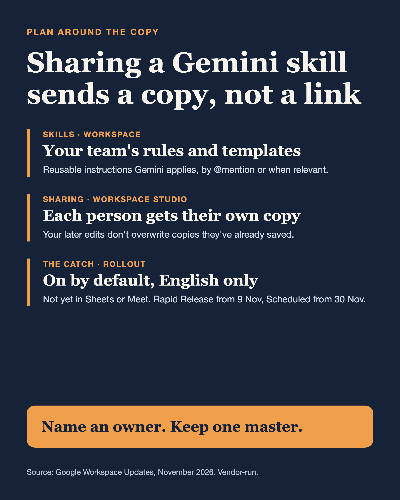

Share a Gemini skill, and you share a copy
Google now lets teams share Gemini skills in Workspace. What you share is a copy, and your later edits don't reach it.
Google announced this last week. Skills are reusable, custom instructions that guide Gemini to apply your team's rules, templates and reference files. When you share one from Workspace Studio, each person gets their own copy to edit and turn on. Changes you make later don't overwrite the copies they've already saved, and they also need access to any Drive files the skill points to.
You can call a skill with an @mention in the web versions of Gmail, Docs, Slides, Drive and Chat, and Gemini can also apply one when it's relevant. Skills are on by default for eligible editions, and admins can turn them off. They're not in Sheets or Meet yet, and only English is supported for now. Rapid Release domains started getting them on 9 November, and Scheduled Release domains start on 30 November.
A habit worth setting up early: give each shared skill an owner and a version date in its name, and keep one master copy. When the master changes, tell people to save the new copy.
Last week I asked who shares the good skills in an organisation. This is part of Google's answer, and the copy rule is the detail I'd plan around.
